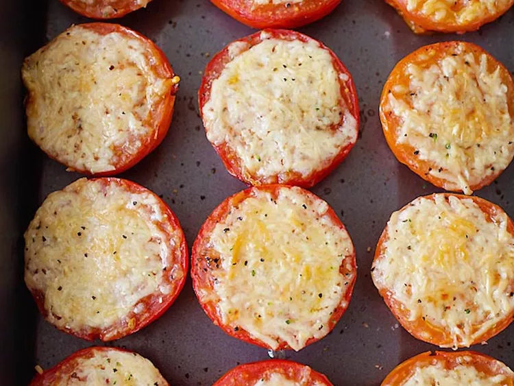

Home
Parmesan-Roasted Tomatoes
These Parmesan tomatoes are a delicious vegetable side dish that go with pretty much anything.

Ingredients
- 6 small tomatoes, halved
- 1 tablespoon olive oil
- 1 pinch salt
- ground black pepper to taste
- ½ cup grated Parmesan cheese
Steps
- Preheat the oven to 400 degrees F (200 degrees C).
- Place tomatoes in a bowl and toss gently with olive oil and season with salt and pepper. Arrange on a baking sheet and top each tomato half with Parmesan cheese.
- Bake in the preheated oven until Parmesan cheese is melted and slightly browned, 15 to 20 minutes.